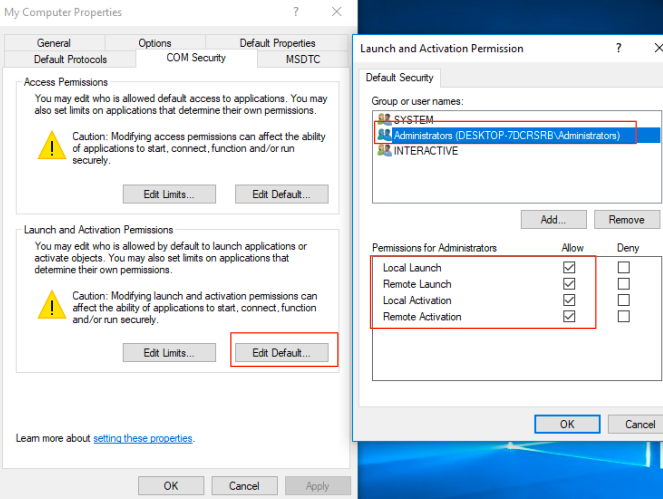

Use OLEViewDotNet to identify launch and access permissions.
DCOM methods can be useful, but dependent on application.
If a DCOM application has no explicit Launch or Access permissions, Windows allows users of the Local Administrator group to Launch and Access the application remotely. This is because DCOM applications have a “Default” set of Launch and Access permissions. If no explicit permissions are assigned, the Default set is used. This can be found in dcomcnfg.exe and will look like this:
